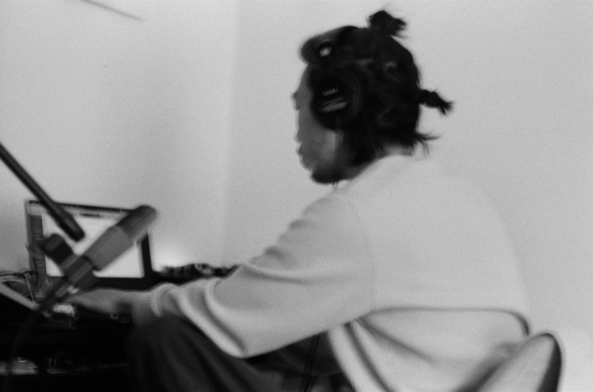

I’m a cellist, composer, and improviser offering private cello lessons in Tokyo for students of all ages and experience levels, from complete beginners to advanced musicians.
teaching

Cello Lessons in Tokyo
Technique, creativity, and finding your own musical voice.
Free 30-minute consultation
Not sure if lessons are right for you? I offer a complimentary 30-minute consultation to meet, discuss your musical interests and goals, and explore how we might work together. No prior experience is necessary.
With over 15 years of teaching experience in New York, including eight years at Crestwood School, I take an individualized approach to learning. My goal is to help each student develop a strong technical foundation while discovering their own relationship with music.
Lessons can include cello technique, posture and bowing, intonation, reading and writing music, repertoire, improvisation, composition, recording, and music production. We can work toward specific goals or explore music more openly through experimentation and listening.
I believe learning an instrument is about more than mastering technique. It is also about developing curiosity, learning to listen deeply, and discovering how to express yourself through sound. My approach combines traditional instrumental study with creative exploration, helping students become not only better musicians but more independent and thoughtful listeners.
Whether you are picking up the cello for the first time, returning to the instrument, preparing for auditions, or looking to explore improvisation and composition, lessons are tailored to your interests and pace.
Lesson Rates
Individual Lessons
- 30 minutes¥6,000
- 50 minutes¥10,000
Lesson Packages
50-minute lessons
- 1 lesson¥10,000
- 4 lessons¥38,000 (save ¥2,000)
- 8 lessons¥72,000 (save ¥8,000)
30-minute lessons
- 1 lesson¥6,000
- 4 lessons¥23,000 (save ¥1,000)
- 8 lessons¥44,000 (save ¥4,000)
Packages are paid in advance and offer a discounted rate for students who wish to study consistently.
Get in Touch
Interested in learning together? Get in touch to schedule your free 30-minute consultation. Tell me a little about yourself, your musical background, and what you would like to explore. I look forward to meeting you.